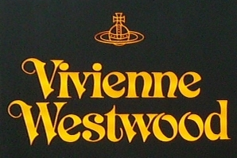

비비안 웨스트우드 Vivienne Westwood
비비안 웨스트우드(Vivienne Westwood)는 펑크를 주류 패션으로 끌어올린 영국의 독립 럭셔리 패션 브랜드이다.
최종 업데이트
비비안 웨스트우드는 어떤 브랜드인가
비비안 웨스트우드(Vivienne Westwood)는 1941년생 영국 디자이너가 1971년 런던 킹스로드에서 음악가 맬컴 매클래런(Malcolm McLaren)과 함께 연 부티크에서 출발한 패션 하우스다. 1970년대 펑크 룩을 만들어낸 핵심 인물로, 찢어진 옷과 안전핀, 타탄 체크로 기성 질서에 맞선 반항의 미학을 패션 언어로 끌어올렸다.
이후 펑크에서 하이패션으로 영역을 넓혔고, 창립자는 2022년 12월 81세로 별세했다. 지금도 손꼽히는 독립 럭셔리 하우스로서 영국적 전통과 펑크의 충돌을 이어가고 있다.
비비안 웨스트우드는 어떻게 봐야 할까
비비안 웨스트우드의 차별점은 다수 럭셔리 브랜드가 대형 그룹 산하로 편입된 흐름과 달리 독립 럭셔리 하우스로 남아, 창립자의 펑크 정신과 환경운동 신념을 상품에 직접 녹여낸다는 데 있다. 창립자는 2012년 '기후 혁명(Climate Revolution)'을 내걸고 '적게 사고, 잘 골라, 오래 입으라'는 메시지로 과소비에 반대했으며, 이 활동가적 색채가 단순한 럭셔리를 넘어선 신념의 표상으로 작동한다.
한국에서는 오브(Orb) 목걸이가 2030 세대의 핵심 아이템으로 자리 잡아 홍대 거리에서 흔히 눈에 띌 만큼 확산됐고, 일본 만화의 영향으로 시작된 인기가 국내로 번졌다. 다만 창립자 사후에는 남편이자 크리에이티브 디렉터가 유산을 잇는 구조여서, 반항의 원형을 어떻게 지속할지가 과제로 남는다.
이는 신념 소비에 민감한 한국 2030 시장에서 특히 중요한 변수다.
비비안 웨스트우드는 어떻게 시작되고 성장했나
비비안 웨스트우드의 출발점은 1971년 런던 첼시 킹스로드 430번지다. 맬컴 매클래런이 'Let It Rock'이라는 이름으로 매장을 열었고, 웨스트우드가 옷을 직접 손보고 제작하며 합류했다.
매장은 1974년 'SEX'로 간판을 바꿔 1976년까지 운영되며 펑크 무브먼트의 외형을 규정했고, 매클래런이 이끈 섹스 피스톨즈(Sex Pistols)와 음악·의상을 하나로 묶어 영국 펑크 신을 형성했다. 1980년대 들어 웨스트우드는 펑크를 넘어 영국 전통 복식과 역사적 재단을 재해석한 하이패션으로 방향을 틀었고, 코르셋과 타탄, 크리놀린 같은 요소를 현대적으로 되살렸다.
2004년 빅토리아 앤드 앨버트 미술관은 생존 영국 디자이너로는 최대 규모의 회고전을 열었고, 2006년 그녀는 영국 왕실로부터 데임(Dame) 작위를 받았다. 펑크의 거리에서 시작한 브랜드가 글로벌 럭셔리 하우스로 성장한 궤적이다.
비비안 웨스트우드의 브랜드 아이덴티티는 무엇인가
브랜드의 핵심 가치는 반항과 환경운동이다. 기성 체제에 의문을 던지고 '스스로 생각하라'는 태도를 일관되게 밀어붙인다.
상징인 오브(Orb) 로고는 1980년대 중반에 만들어졌는데, 영국 왕실의 보주(Sovereign's Orb)에 토성의 고리를 더한 형태로 과거의 전통과 미래의 자유를 한 기호에 담았다. 왕권의 권위와 체제 밖을 도는 독립의 의지를 동시에 표현해 클래식을 뒤집는 펑크의 태도를 압축한다.
타깃은 자기 표현과 신념을 중시하는 2030 세대와 서브컬처 애호층이며, 브랜드 보이스는 도발적이면서도 위트가 있고 정치·환경 메시지를 거리낌 없이 드러낸다.
비비안 웨스트우드의 대표 제품과 서비스는 무엇인가
대표 상품은 오브 로고를 단 목걸이다. 크리스털과 진주, 실버·골드 톤으로 변주된 펜던트가 시그니처로, 가격대는 대체로 십수만 원대부터 시작해 디자인에 따라 백만 원대까지 분포한다.
이 밖에 코르셋과 타탄 셔츠, 니트, 가방, 신발 등 의류·액세서리 전반을 다룬다. 한국에서는 공식 온라인 스토어와 주요 백화점, 명품 이커머스 및 중고 거래 플랫폼을 통해 폭넓게 유통된다.
비비안 웨스트우드는 지금 어떤 상태인가
본사는 런던에 있으며, 다수 럭셔리 브랜드와 달리 대형 그룹에 속하지 않은 독립 하우스로 운영된다. 창립자 별세 이후에는 남편 안드레아스 크론탈러(Andreas Kronthaler)가 크리에이티브 디렉터로서 컬렉션을 이끌고 있으며, 2025년 봄 컬렉션을 파리에서 선보였고 같은 해 바르셀로나에서 브랜드 최초의 브라이덜 쇼를 열었다.
매출은 창립자가 별세한 2022년 약 1억 파운드를 넘어섰고 전년 대비 큰 폭으로 늘었다. 최신 지분 구조 등 세부 소유 현황은 미공개다.
비비안 웨스트우드 연혁 — 주요 사건은 언제였나
비비안 웨스트우드 로고는 어떻게 변해왔나

BI/CI 아카이브보관 이미지 1자주 묻는 질문
비비안 웨스트우드는 어느 나라 브랜드인가요?
비비안 웨스트우드는 영국의 패션·럭셔리 브랜드입니다.
비비안 웨스트우드의 브랜드 아이덴티티는 무엇인가요?
브랜드의 핵심 가치는 반항과 환경운동이다.
비비안 웨스트우드의 대표 제품은 무엇인가요?
대표 상품은 오브 로고를 단 목걸이다.
비비안 웨스트우드의 본사는 어디에 있나요?
본사는 런던에 있으며, 다수 럭셔리 브랜드와 달리 대형 그룹에 속하지 않은 독립 하우스로 운영된다.
비비안 웨스트우드의 공식 웹사이트는 어디인가요?
비비안 웨스트우드의 공식 웹사이트는 https://www.viviennewestwood.com/ 입니다.
출처와 검증
비비안 웨스트우드 관련 참고: 공식 웹사이트. 브랜드명은 한글과 원어를 함께 표기하되 데이터에 없는 표기는 만들지 않습니다. 기원 국가·설립연도는 검수된 정의문에서 확인된 값을 우선하고, 없을 때만 공식 웹사이트 URL이 일치하는 위키데이터 개체의 값을 씁니다.